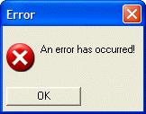

{IMAGE_OPAQUE}
Syntax
{IMAGE_OPAQUE= Image_Name }
|
Argument |
Type |
Description |
| Image_Name |
C |
The name of a built-in Alpha Five bitmap, a bitmap that you have added to the current database (on the Code tab of the Control Panel ), one that you have loaded with UI_BITMAP_CREATE(), or an image loaded from a file. |
Description
The {IMAGE_OPAQUE} command displays a bitmap (.BMP) image. This command is to be used with opaque images that are drawn at the same time as the background.
Limitations
Desktop applications only
Example
In this example, we display the Windows error icon in a text box.
|
ui_dlg_box("Error",<<%dlg% {lf}; {image_opaque=$sys_error} An error has occurred! ; {lf}; <*15&OK> %dlg%) |
This script produces this dialog:

This example allows you to select and display a .BMP or .JPG image.
|
dim Pix_In as C dim result as L = .f. dim ibuffer as B ui_dlg_box("Scale Image",<<%dlg% {lf}; [%fImage files(*.bmp;*.jpg)%.52Pix_In!pixin]; {lf}; {image_opaque=temp_in}; {lf}; %dlg%,<<%code% if (a_dlg_button = "pixin") then ibuffer = file.to_blob(Pix_In) ui_bitmap_load("temp_in", ibuffer) a_dlg_button = "" end if %code%) |
This example allows you load and scale a .BMP image.
|
dim Pix_Out as C = "" dim Pix_In as C = "" dim cmode as C = "Percentage" dim mode as N dim HSize as N dim VSize as N dim result as L = .f. dim ibuffer as B dim obuffer as B ui_dlg_box("Scale Image",<<%dlg% {font=verdana,10} {xmargin=2} {ymargin=1} {lf}; {region} Image In |[%fImage files(*.bmp)%.80Pix_In!pixin]; Image Out |[%fImage files(*.bmp)%.80Pix_Out]; {endregion}; {lf}; {region} {frame=1,2:Scale Mode}(cmode:Measurement) (cmode:Percentage) | | {frame=1,2:New Size}Width [.10HSize] Height [.10VSize]; {lf}; {embedded=%S%80,20preview_in} |{sp=2}| {embedded=%S%80,20preview_out}; {endregion} {lf}; %dlg%,<<%code% IF (a_dlg_button = "Close") THEN ui_bitmap_drop("temp_in") ui_bitmap_drop("temp_out") END IF IF (a_dlg_button = "pixin") THEN ibuffer = file.to_blob(Pix_In) ui_bitmap_load("temp_in", ibuffer) ui_modeless_dlg_box("preview_in","{image_opaque=temp_in};") a_dlg_button = "" END IF IF (a_dlg_button = "Scale") a_dlg_button = "" IF (Pix_Out <> "") THEN IF (cmode = "Percentage") THEN mode = 1 ELSE mode = 2 END IF result = scale_image(Pix_In, Pix_Out, mode, HSize, VSize) IF (result = .T.) THEN ibuffer = file.to_blob(Pix_Out) ui_bitmap_load("temp_out", obuffer) ui_modeless_dlg_box("preview_out","{image_opaque=temp_out};") END IF END IF END IF %code%) FUNCTION scale_image as L (Pix_In as C, Pix_Out as C, Mode as N, HSize as N, VSize as N) dim ibuffer as B dim obuffer as B dim CurrHSize as N dim CurrVSize as N scale_image = .f. if (Pix_in = "") .or. (Pix_Out = "") then exit function end if if (Mode < 1) .or. (Mode > 2) then exit function end if if (HSize <= 0) .or. (VSize <= 0) then exit function end if ibuffer = file.to_blob(Pix_In) ui_bitmap_load("temp_in", ibuffer) ui_screen_draw(<<%code% CurrHSize = Bitmap_Width("temp_in") CurrVSize = Bitmap_Height("temp_in") %code%) IF (Mode = 1) THEN ' percentage ui_bitmap_drop("temp_out") ui_bitmap_create("temp_out", CurrHSize * HSize / 100, CurrVSize * VSize / 100) ui_bitmap_draw("temp_out",<<%code% bitmap("temp_in", 0, 0, CurrHSize * HSize / 100, CurrVSize * VSize / 100, "STRETCH,OPAQUE,HALFTONE") %code%) ELSE ' specific dimensions ui_bitmap_drop("temp_out") ui_bitmap_create("temp_out", HSize, VSize) ui_bitmap_draw("temp_out",<<%code% bitmap("temp_in", 0, 0, HSize, VSize, "STRETCH,OPAQUE,HALFTONE") %code%) END IF obuffer = ui_bitmap_save("temp_out") IF (file.from_blob(Pix_Out, obuffer) > 0) THEN scale_image = .t. END IF END FUNCTION |
In this example, we display an image file on disk.
|
ui_dlg_box("Error",<<%dlg% {lf}; {image=c:\myimages\imag1.png} This is an image from a disk file! ; {lf}; <*15&OK> %dlg%)
|
See Also